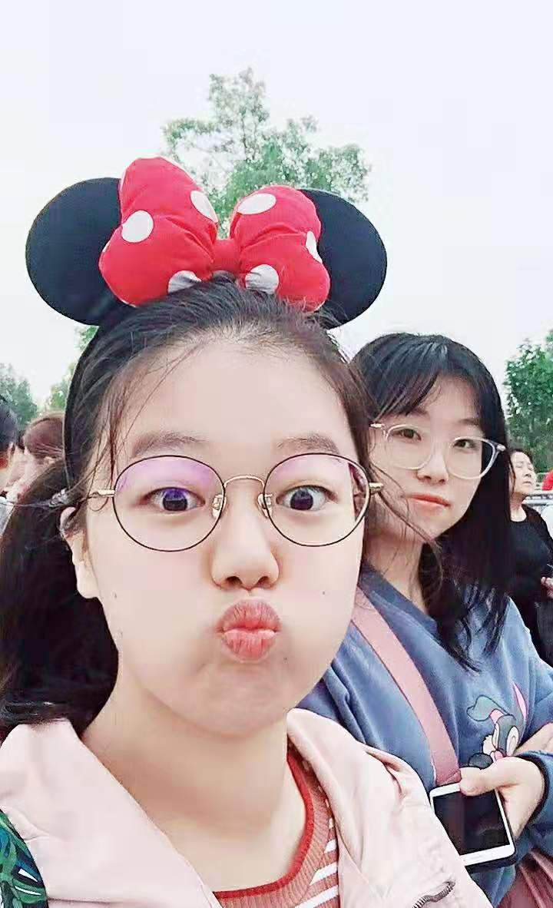

9：00点起，早饭在家吃了小笼包和豆花，妈咪煮的铁皮石斛没喝上，9：50从玉环乘车到温岭火车站，12：18从温岭坐火车回杭州，中饭在火车东站吃了KFC，吃完去坐公交车，16点多到的寝室，在食堂吃了晚饭后一个人去操场走了10圈，走完喝了一杯纯牛奶， 今天一共吃了6粒铁皮石斛、2个柑，23：20前放下手机，睡着预估24：00后。
7：22醒，早饭和一波在食堂吃了八宝粥、荷包蛋、一波给我的肉松和小笼包，去图书馆学习了一上午，中午在寝室和元昭、一波一起吃盛大的KFC餐，下午第二次跑电气工程学院团委的报销单，之后去图书馆学习。在食堂吃了晚饭后一个人去操场走了5圈，走完喝了一杯纯牛奶，18：30去参加了党支部会议，完会后回图书馆学习至21：30回寝室。回寝室听小白讲她第一天上班的感受，元昭在准备第二天学而思的面试，她选的是面试题目是一道化学题。想起准备优才时元昭一直陪着我，衷心祝她好运。
今日《流体力学》学至42页，一共吃了6粒铁皮石斛，1个橘子，24：29睡着（早便，不成形）。
7：28起床，把衣服洗了，早饭一个人（因为一波起不来哈哈哈哈）在食堂吃了葱油面、荷包蛋、豆奶，和一波去图书馆学习了一上午，中午两个人去食堂吃了饭，中午趴在图书馆的桌子上睡了一小会儿，醒来发现昨天交的团委报销居然下来了，学了一会儿跑去教二、电机楼办理一些琐事，之后又回到图书馆学习。在食堂吃了晚饭后一个人去操场走了10圈，走完喝了一杯纯牛奶，回图书馆学习至21：30回寝室。
今日《流体力学》学至56页，一共吃了6粒铁皮石斛，没有吃水果，23：56睡着（未便）。
7：45起床，早饭和一波在食堂吃了油条、黄金糕和豆奶，和一波去图书馆学习了1个白天，中饭在食堂，晚饭在食堂，饭后照常去操场走10圈，走完后喝了一杯牛奶回到寝室，元昭和她的朋友们来寝室一起搞叠纸游戏公司的网上考试。晚上的我好好休息，看看新出的韩剧《偶然发现的一天》。
今日新开一本外国喜剧小说《乌克兰拖拉机简史》，看至45页，讲一个84岁的老男人丧偶后要娶一个36岁的乌克兰妖娆女人遭到两个女儿劝阻的故事，老男人有点像前段时间播的《都挺好》里的男主苏大强哈哈哈，爱上了且不顾一切地付出，要把毕生积蓄给这个女人，要通过和她结婚甚至想和她生个孩子帮助她移民到英国。跟书名拖拉机基本上没啥关系。小说剧情预估走向：老男人被骗尽一切后终于领悟人生真谛？两个原本不和的女儿却在同心协力的反对父亲结婚中认识到亲人的不可分割、重修于好？
今日《流体力学》学至63页，没有吃铁皮石斛，没有吃水果，1:07睡着（早便，正常）。
10:42醒来，中午和小白一起在寝室吃了酸菜牛肉泡面+鸡蛋+火腿肠，下午三点不到我们骑共享单车去满觉陇赏桂，骑到杨公堤上发觉景色迷人，停下来欣赏一番后坐公交车到了动物园站，走路至下满觉陇，一路上都是桂花的香气，道路两旁都是买桂花产品的小摊，小白买了一瓶桂花蜜，我们俩一人吃了一碗桂花栗子羹和半块桂花糖糕，真好吃嘻嘻。走到上满觉陇准备在那里用晚餐，刚进一家餐厅坐下发现菜单上的菜太贵了于是仓皇而逃，坐公交到黄龙体育中心，拖着沉重的双腿到二食堂二楼吃香菇滑鸡和糖醋排骨，之后买一杯纯牛奶到寝室休息。
今日吃了4粒铁皮石斛，没有吃水果但吃了桂花，24:30睡着（午便，正常）。
7:40醒来和一波在食堂各吃一碗馄饨，来到图书馆学习，发现我平常坐的位子被喜欢一波的一个男孩子坐了，我只好坐在隔壁座位上哈哈哈哈。没学多久就开车去跑电机楼、教四、曹楼、寝室，和一波一起在食堂吃中饭后返回图书馆，下午一点左右找董老师商量毕设开题，之后去邵科馆替小白参加先锋学子会议，下次让她替我去哈哈哈。回到图书馆没看两页书又和一波去食堂吃饭了。今天跑来跑去已经一万步加上太晚了就不走操场了，今天买的牛奶是500ml的（平时喝的是200ml的）。回到图书馆填完四张表再玩会儿手机就九点了。
今日《流体力学》学至68页，《乌克兰拖拉机简史》看至55页，吃了3粒铁皮石斛（2粒发酸吐掉），吃了2个猕猴桃，23:59睡着（早便，正常）。
7：37醒来和一波在食堂吃了煎饺、荷包蛋和豆奶，来到图书馆学习了一天，早饭中饭都在食堂，晚饭后走了10圈再喝了一杯蒙牛的纯牛奶（比光明贵4毛钱）。
早上去找班主任签字，徐老师问了我的毕业去向，恭喜我并嘱托我有个职业规划，他真的是一位很好的班主任。
今日《流体力学》学至77页,没吃铁皮石斛，吃了2个猕猴桃,24:09睡着（晚便，略稀）。
7：30醒来一个人在食堂吃了葱油面、荷包蛋、豆奶，学了白天，晚上拿完快递到寝室，一个人（小白去上海出差，一波在图书馆）待了一会儿后元昭回来了。看了《偶然发现的一天》第5集。
今日吃了2个猕猴桃，没吃铁皮石斛，喝了500ml红枣酸奶，太甜太难喝还是纯牛奶好喝，24：14睡着（未便）。
8：05醒来一个人在食堂吃了一碗南瓜粥和一波给我的肉松，中午和一波一起吃了鲜虾鱼板面+鸡蛋+火腿肠，下午和一波一起去图书馆了，晚饭在食堂吃的，吃完后走了10圈，喝了480ml的蒙牛鲜奶再回到图书馆。
今日《流体力学》学至89页,吃了1个猕猴桃，吃了鲜的铁皮石斛，看了《偶然发现的一天》第6集，24：08睡着（早便，正常）。
8：19醒来，拒绝了一波的图书馆之约，和元昭赖了一上午的床，把衣服洗了后，一个人吃了食堂铁板饭（本来约了一波，我到食堂她说她和那个男孩子一起吃饭呜呜呜），下午去图书馆了，来到图书馆还没开始学习就被一波拉去唱K了，和元昭一波唱了一下午后在门口的麦当劳吃了晚饭，晚上回到寝室帮小白搞团员推优的事情（因为她没买到票和学长被困在上海了哈哈哈哈），再到图书馆学了一小会儿。
一波好像要开始甜甜的恋爱了哈哈哈哈，她的追求者跟她说“30岁前要挣到一个亿”，拭目以待——我们的五千万夫人。
今日没吃水果，没喝牛奶，没吃铁皮石斛，1：35睡着（早便午便，正常；晚便，略稀）。
9：24醒来，赖了床后中午去接妈咪吃饭，下午上完课后回到寝室，晚上和妈咪一起吃了饭后和小白去开党支部会议，晚上和妈咪在外面住。
今日吃了2个猕猴桃，喝了1杯牛奶，24：20睡着（忘了）。
6：48醒来，在旅馆吃了早饭，去紫金港开了学生委员会，开会花了半小时，来去花了2小时而且只是通过一堆不认识的人的任命草案。中午在食堂和妈咪吃了饭，中午一起在旅馆睡了午觉后回到寝室，下午董老师给我布置了Js学习任务让我开始学习。晚上去图书馆替倪伟康的班，把大家都送走好开心，干活才有存在的意义！倪伟康晚上就把81块劳动费带给我了嘻嘻。
今日《流体力学》学至99页，吃了1根香蕉和妈咪煮的铁皮石斛，24：52睡着（午便，正常）。
7：52醒来一个人在食堂吃了一碗南瓜粥和一波给我的肉松，回到寝室喝了铁皮石斛，之后去图书馆和一波一起学习，新开一本雪静给我的HTML入门书《Head First HTML 与CSS》，交了报销单和一波在食堂吃了午饭，帮雪静拿了快递，回到寝室睡了午觉，睡醒后懒骨头一波的赖床行为要批评，两点多我们才到图书馆开启下午的学习。晚上跟艺婧突然约了第二天的迪士尼之旅嘻嘻好开心，忙碌地准备起来结果我的手机突然充不进电了，我正要走出图书馆自习室的一瞬间整个图书馆（除了神奇401灯还亮着）和外面的一半灯都灭了。回到8舍，宿舍阿姨在着急地检查停电情况，我慌慌地走到寝室，推开门看见亮亮的元昭对着门外的我笑哈哈哈哈哈好开心，元昭根本不知道外面停电了，没有停电的我们好开心。
今日吃了1根香蕉，喝了鲜的铁皮石斛，24：48睡着（午便，正常）。
7：59醒来，中午打的至杭州东站，在KFC吃了中饭，和艺婧一起坐崭新崭新（第一天开的新列车，臭臭的）的复兴号荧光色绿皮动车（使用绿皮火车轨道的假动车）到达上海南站，坐地铁到徐汇站的美罗城逛了华为体验店，喝了乐乐茶，再吃了香香的烤肉，再坐地铁到迪士尼站。快到站的时候有个女人来推销迪士尼发箍和雨衣，我买了1个米奇发箍和2件雨衣共40块钱，第二天才知道自己买贵了哈哈哈哈哈。旅店的老板来地铁站接我们，到达旅店感觉挺好的，干干净净的，但房间不能反锁，我们两个把沙发抵在房间门口，在门把手上放了个空调遥控器，这样万一有人开门我们也可以及时被掉落的遥控板惊醒。本来想去逛迪士尼小镇的，可是住得有点远就没有去逛，聊了一会儿明天的行程安排，24：26睡着（早便，正常）。
6：48醒来，在旅店吃了早餐（2小片哈密瓜，一小根油条，一小碗绿豆粥，一大个鸡蛋），坐7：30的班车，二十分钟后到达迪士尼排队口，大家都起得好早呀！！！已经有好多人在排队了，不过今天是星期三人已经算是很少了，我们等到9：00开园快速地通过安检，直奔最最热门的“飞跃地平线”项目，因为艺婧是第二次玩且我们做好了攻略，知道如何抢fp——快速通行证，我们一天的行程都超级顺利。
 Part1 翱翔.飞跃地平线
我们坐在座位上系好安全带，前面巨大的球形屏幕出现逼真的冰山，座位会随着冰山的上升升到半空中，让我感觉自己也升到了冰川上哈哈哈哈。随着镜头我慢慢往前飞，穿过冰川湖海、草原长城、高楼大厦、风景名胜（我记得有长城、泰姬陵、东方明珠塔、埃菲尔铁塔），有各种各样可爱的动物，大象海豚什么的，我在短短5分钟内“飞跃了地平线”哈哈哈哈哈，但是太快了觉得不太过瘾。中途我看得太认真放慢了呼吸，艺婧提醒我闻闻气味，我努力嗅嗅，空气中真的有股让人很舒服的淡淡香气。
Part2 探险家独木舟
我们约了“雷鸣山漂流”的快速通行证但时间没到，我们就去排了近处的“探险家独木舟”，这个项目居然是要自己拿块桨板，和其他十几位游客一起划哈哈哈哈（有船长和大副在主导船的前行和转向的，我们就是瞎体验一下），我全程有很认真地在划哦，我捡了一朵水面上的红色花朵给艺婧，跟她说"心里的花，带你回家"，艺婧向我投来鄙夷的眼神哈哈哈哈，十分钟左右我们就上岸了。
Part3 雷鸣山漂流
“雷鸣山漂流”我猜是“激流勇进”类的项目，嘿嘿嘿被我猜中了，一辆圆艇坐8个人，在迂回的峡道中碰撞着，撞得人后背疼。轨道把我们升到一个高度，我们都知道要滑下去了有一点点紧张，最刺激的地方是在全黑的山洞中突然滑下，坡度大时间短，好开心。我们对面俩姐弟没穿雨衣在到达终点时被水淋得哇哇大笑，还好太阳好，不打紧哒。
Part4 古迹探索营
艺婧不愿意跟我去玩这个需要很大体力活动的项目而选择了看演出，我只好一个人去排队排了40分钟但是很值得，我会轻功，飞檐走壁——关关难过关关过，道道难走道道走！哈哈哈哈哈我太勇敢了在每个岔口选择了最难的道路，同时玩的游客里只有我一个女孩子这么勇敢，一旁的姐姐都夸我“我觉得我胆子已经很大了，没想到你胆子这么大”，其实我也紧张但是感觉也还可以克服哈哈哈，好好玩啊就是路程太短了，我以为可以玩很久的结果只玩了15分钟左右。
Part5 探秘海妖复仇号
在我“古迹探索营”项目结束后，艺婧演出还没看完，我登上她所在的剧院门口的“复仇号”海盗船上看看，这艘船好无聊啊哈哈哈哈。
Part6 加勒比海盗——沉落宝藏之战
我们坐上船进入绵延的黑漆漆的隧道，进入一个虚拟的海盗世界寻找宝藏。
Part7 旋转疯蜜罐
就是坐在蜂蜜罐子里转转转，不过不能转很快，且时间太短，不过瘾。
Part8 中饭
我和艺婧的肚子早就开始饿了，可是这也舍不得吃那也舍不得吃因为太贵了！爆米花上百一桶，火鸡翅/火鸡桶80元，西餐中餐一小盘的套餐也都近百元了，玉米烤肠也要80元，百事可乐15元一大瓶。艺婧说带我去明日世界那里的店吃会划算一些，我们玩完“加勒比海盗”项目后来到明日世界的“能量补充站”，含泪买了两份火鸡堡套餐（85/份），坐下放松我们酸酸疼疼的脚脚。
Part9 创极速光轮
吃完饭就要去玩“创极速光轮”了我好紧张，看着弯弯曲曲的轨道，听着由远及近、由近到远的尖叫声，我感到非常紧张，死活不肯进去，艺婧说“那你就在下面等我”，我看着艺婧进去后在下面站了一分钟，往上望望觉得要是没有体验过一定会后悔，不能对不起299的门票！我刷了快速通行证冲了进去，在快到登车队伍点时喊艺婧，艺婧看到我笑着从队伍前面到了我身边“啊你怎么进来了哈哈哈”，“我想想还是要玩一下不然太亏了，真的不可怕”“很可怕的哈哈哈哈你最好不要玩”！！！我们摘下眼镜和神圣多余的挂件，俯下身子跪在车上，压下后背的保护装置，我牢牢地握住手把，艺婧跟我说害怕的话闭上眼就好了。
这个车的起始加速度也太大了嗷嗷嗷，而且它在出平台和某一阶段会停下，通道内出现科技感的女声倒数“321”，让我越来越紧张且忐忑接下去会发生什么，我全程几乎没有睁眼，只感受到迎面呼来的凉风，身体也同车一起坠落，甚至感觉我腰上的肌骨和我分离了，但我一声也没叫，我的注意力都放在我的车把上，不过这刺激的感觉两三分钟就结束了。艺婧说我在通道里没睁眼很亏哦因为我这样就看不到非常炫酷的设计了哈哈哈，我下车的时候手心都是汗但真的好爽呀，还好我去体验了一把嘿嘿嘿，不过一把就够了哈哈哈哈，现在我觉得这是迪士尼最好玩的项目。
Part10 巴斯光年星际营救
这个项目就是坐小列车射击安装在墙上的光标获取分数的游戏，已经不适合我这种“老年玩家”了哈哈哈。
Part11 花车游行
我们在花车起始点看大门打开，出来了好多可爱的迪士尼系列的动画人物，米老鼠、唐老鸭、冰雪奇缘里的公主、美女与野兽、花木兰……他们随着欢乐的音乐跳舞，嘴里也对着音乐口型，每个演员都很热情地向我们挥手还和我们有眼神互动，超有氛围。
Part12 弹簧狗转转转
这个弹簧狗转转转把我和艺婧晃扁。
Part13 晶彩奇航
好无聊跟独木舟一样无聊，就是坐船坐一圈，还不如西湖泛舟来得爽。
Part14 小飞侠天空奇遇
一波推荐这个，我觉得一般般哈哈哈。
Part15 喷气背包飞行器
排队排了半个小时，我在下面的时候好紧张，感觉好高，转的速度好快呀，我说艺婧我们能不能由我来开飞行器，她说好的，那我不升上去在最低点飞你会不会打我，“会！”嗷呜结果我一坐上拉动手柄去把飞行器开到了最高点哈哈哈哈（坐上去了就不会害怕的我）这时候全场的灯光亮起，太炫酷了，景致好棒，风吹来好舒服。
Part16 漫游童话世界
在城堡里设置了一个白雪公主童话场景，我觉得挺适合小朋友看看的。
Part17 万圣节主题游行
这个好好看，音乐好听，且氛围超级好超开心，大家都愿意跟可爱的动画人物握手，但看到黑黑的不知名的动画角色不敢伸手了哈哈哈哈。
Part18 小熊维尼历险记
感觉也很一般。
Part19 七个小矮人矿山车
好好玩，排了半个多小时的队，艺婧跟我说她上次排了2小时感觉这个项目很无聊的，可我觉得坐这个小型过山车太有趣了哈哈哈哈，幸亏在闭园之前感受到了，坐在第一排的我们一直吹风感觉超级享受。
Part20 烟花表演
把动画投在乐园中心的城堡上供游客观看，伴随音乐和动画节点放烟花。烟花的爆炸声太响，玩了一整天精疲力尽的我感觉烟花表演没什么意思，就和艺婧一起返回旅馆了。
艺婧一到酒店就躺在床上睡着了，一个小时后醒来去洗漱，我临时被通知要参加明天的院设优干奖学金答辩，我回不去我只好托元昭帮忙代答辩，元昭真好。听说今天学校食堂一堆人食物中毒了，大家好像因为校外人员的吃饭问题对食堂一直很不满，这次出现了大爆发（午便，略稀）。
早上在旅馆吃了早饭，回到房间看了《偶然发现的一天》第7集，和艺婧11：00出发坐地铁到美罗城买了最新款小米手机9 Pro 5G（8+256G）。在顶楼吃了饭后前往虹桥火车站返程前往下沙给雪静过生日，雪静一想到我们丢下在公司上班还生日的她两个人出去玩了就不开心，但我逗她说我们玩得不开心她才笑起来。
回到寝室发现10：30要停水，赶快洗了澡（午便，略稀）。
早上在食堂吃了昨天买的虎皮蛋糕，喝了一碗豆浆后和一波去了图书馆，中午在寝室吃了鲜虾鱼板面+鸡蛋+火腿肠，晚上和部长、小澜学姐约饭，听他们讲研究生生活，再回图书馆。（午便，正常）。
早上和一波在食堂吃了葱油面、荷包蛋、豆奶，去了图书馆发现因空调装修没座位了就打算骑车去麦当劳学习，最后去了麦当劳对面的浙江图书馆学习，这个图书馆的自习室好闷啊让人透不过气来，不过杭州市民是真的很热爱学习，这里老老少少人很多。中午本来说好去对面的必胜客吃饭，结果在图书馆的小卖部吃了饭团、香肠、关东煮，真难吃。今天空间里流传了校长带头去食堂吃饭的照片哈哈哈，小白也有勇气去食堂吃饭了，我打算明天也回食堂吃饭了。
和一波在必胜客吃了晚饭，回到寝室困得要睡着，看了电影《诛仙》，我怀疑这是一部搞笑电影，里面的猴子和狗很可爱。
早饭吃了蛋糕和牛奶，今天去紫金港参加了一整天的预备党员培训，中午遇到钟雨含和她一起在食堂吃了午饭，晚上和小白在食堂吃了饭，回到寝室看到元昭剪了短头发（她说是剪发师傅的失误哈哈哈），听她说拿到了TP-Link的offer，祝贺她！(忘了)
吃了煎饺和牛奶，到图书馆学习的一天，下午见了董老师聊了毕设的事情，送我一本他自己主编的《数据结构》嘻嘻嘻，晚上和雪静讨论去千岛湖玩耍的事情，开心！。
《Head First HTML 与CSS》已学至170页，吃了橘子、橙子、猕猴桃（未便）。
早起洗了衣服，吃了煎饺和牛奶，到图书馆学习。今日学习目标：《Head First HTML 与CSS》学至360页。下午发现上次帮小白交的表格有问题，处理了半个下午，好在最后解决了。
实际上学至320页，有吃水果，具体是什么明天再说（早便，略干，出血）。
回到顶部